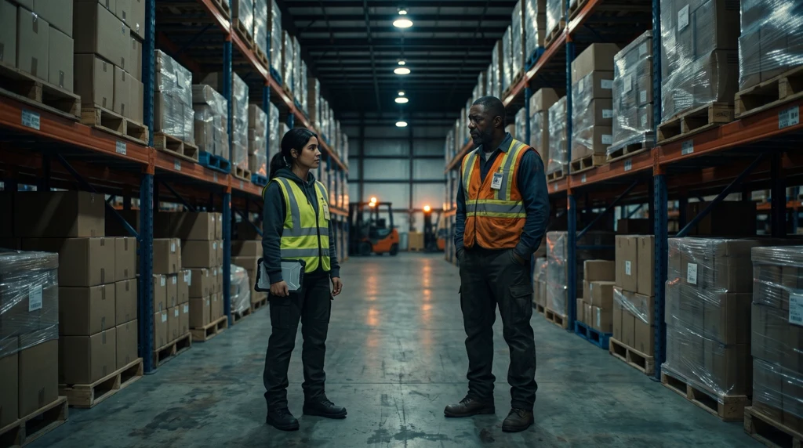
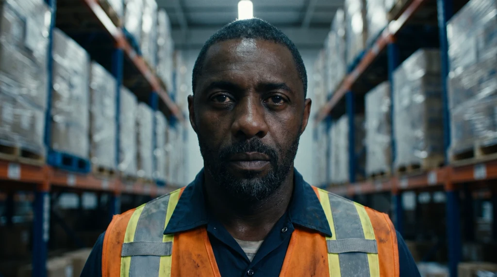
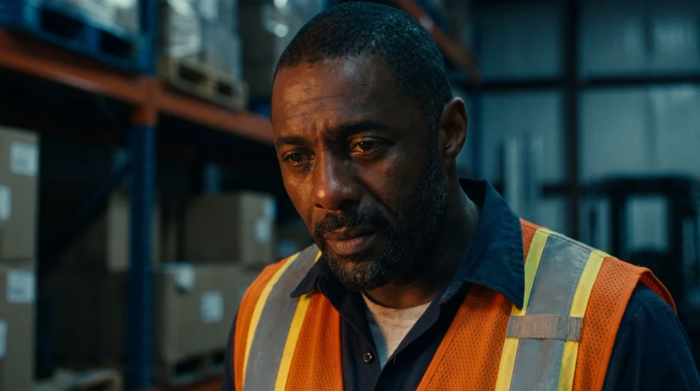
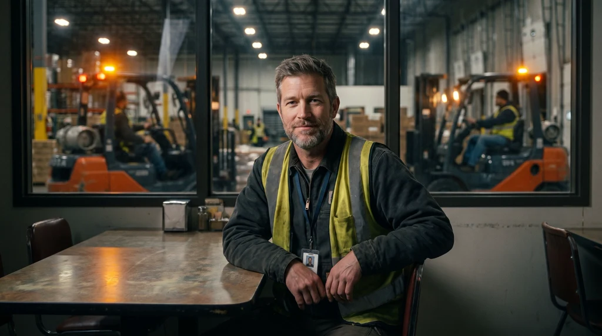
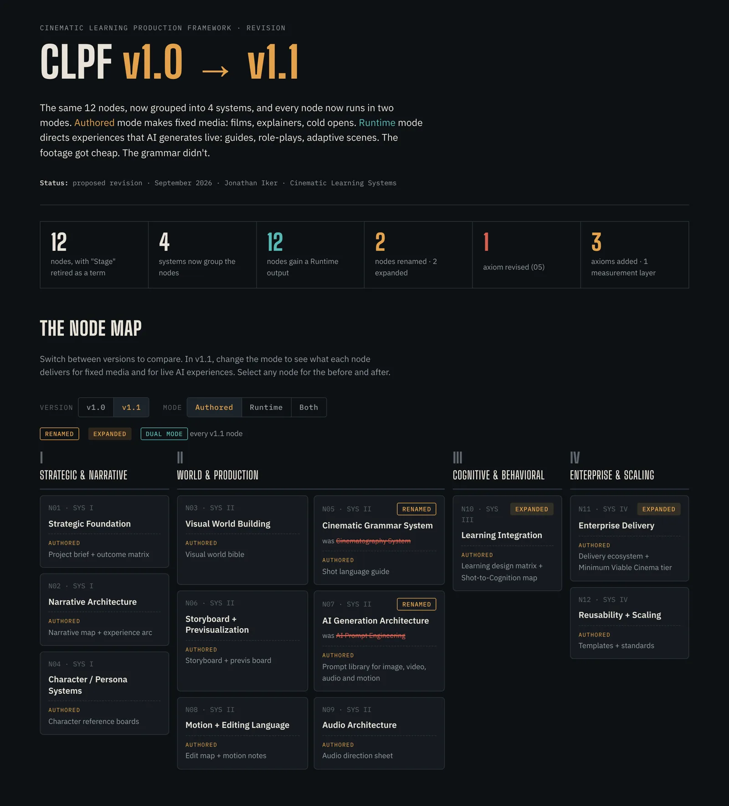

Cinematic Learning Systems · Audit · Issue 07
Designed for Dana. Wrong for Marcus.
An audit of last week’s worked example, the production artifacts behind the fix, and the pilot designed to test it.
Dana and Marcus are composite characters.
- Composite scenario
- Dana, Marcus, Sarah, and Benjamin are composite characters.
- AI-generated imagery
- The photographs are AI-generated editorial images of these fictional characters.
- Concept mockups
- The redesigned screens are concepts, not a shipped product.
- Design pseudocode
- The state engine describes intended logic, not production code.
- First-pass heuristic
- The evaluation rubric is preliminary; a human double-codes diagnosis.
- Designed, not run
- Field Log 001 has no results yet.
- Proposal
- Counterpart design is a proposal, not a validated intervention [Hypothesis].
- Proposed revision
- CLPF v1.1 material is not released.
Chapter 01
The Human Problem

In the original issue
The published opening scene, “The Same Three Seconds,” and The Question. Read it on LinkedIn (opens in a new tab).

The surface read

What the surface doesn’t show
Chapter 02
What the Original Design Missed
In the original issue
The published section on what Issue 06’s traceability got right, why the design was still wrong at its center, and the counterpart problem. Read it on LinkedIn (opens in a new tab).
Corrections
- The 53-study productive-failure meta-analysis is Sinha & Kapur (2021), Review of Educational Research, not Kapur (2016).
- The gesture study is Cook, Yip & Goldin-Meadow (2010), not 2013. It concerns speaking and gesturing, so practice attempts must be spoken aloud, not typed.
- Zhang et al. (2017) was cited without a full reference and could not be confirmed. Withdrawn.
- Schroeder, Adesope & Gilbert (2013) and Mayer & DaPra (2012) were listed as sources but never cited in the body.
- Marcus’s circumstance revised from a father in chemotherapy to a father in hospice.
Chapter 03
Redesigning the Experience
In the original issue
The published account of the redesign and the peer-coach pivot. Read it on LinkedIn (opens in a new tab).

- Identity. Marcus is an AI character with a synthetic voice; the debrief coach is a person.
- Purpose. One skill: noticing which kind of conversation you’re in before choosing an opening.
- Method. Marcus is carrying something he won’t mention unless the learner notices it.
- Data. Who sees scores and how long transcripts are kept — to be written.

- Fatigue: about four hours’ sleep.
- Phone face-down, checked twice in a minute.
- Scanner held loose.
- Counterpart state — caregiving, skill gap, or disengaged — is hidden from the learner.


- Diagnosis first: “What did you think was going on with him?”
- The reveal: caregiving, not disengagement.
- The check is a first-pass heuristic — keyword anchors can be gamed, so a human double-codes diagnosis.
- Transfer: Sarah, receiving dock — a different surface.
Chapter 04
Inside the System
In the original issue
The published “Behind the Curtain” production artifacts, with their layer mappings and status labels. Read it on LinkedIn (opens in a new tab).



Chapter 05
What Remains Unproven
In the original issue
The published evidence findings, each with its evidence tag and “where it stops,” and The Stress Test. Read it on LinkedIn (opens in a new tab).
Proposed study · Designed, not run
Field Log 001
A pilot comparing a generic-hostility counterpart with a cue-bearing counterpart whose hidden state varies, for newly promoted shift leads. No results exist yet; null results will be published.
- Primary measure: does the first 30 seconds include a real diagnostic question?
- Seeking one organization with a frontline supervisor program as a pilot partner.
Chapter 06
Continue the Inquiry
In the original issue
The published Next Question, The Challenge, and the practitioner takeaway. Read it on LinkedIn (opens in a new tab).
Run Field Log 001 with me.
I’m looking for one organization with a frontline supervisor program to pilot the Dana scenario: newly promoted shift leads, a counterpart with a hidden state, and one measure that matters — does the first 30 seconds include a real diagnostic question? Results get published, including null results.
- Read Cinematic Learning Systems (opens in a new tab)
- Invite me to speak — “The Other Person in the Room”
- See the concept screens
Sources
In the original issue
The published source list for this issue. Read it on LinkedIn (opens in a new tab).